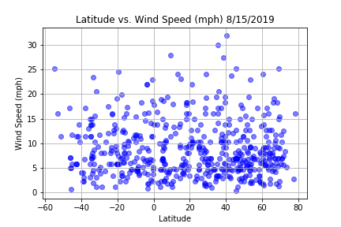

Wind Speed

This graph unfortunately didn't show trends towards anything conclusive. I thought there might be trends showing
higher wind speeds, since warm air clashing with cold air brings on wind. Looking at our temperature graph and comparing
it to this wind speed graph, I thought there would be a higher density of high wind speed dots near 0 to 20 to 40 Latitude.
From the temperature graph, the 0 to 20 to 40 range holds the areas with the highest temperatures which I thought would then
lead to a volatile environment.